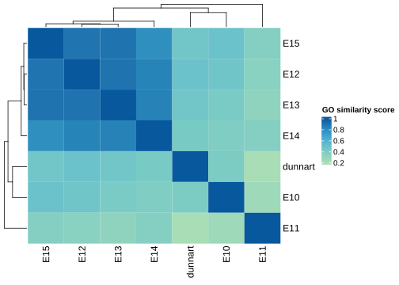
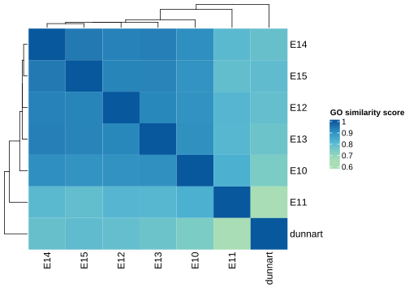
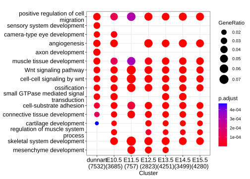
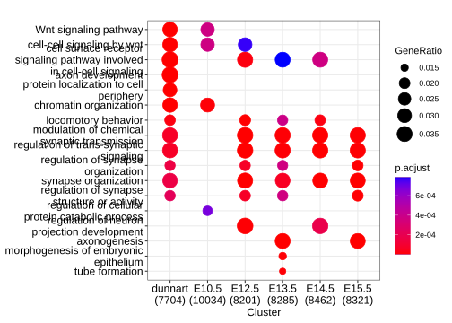
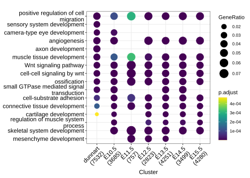
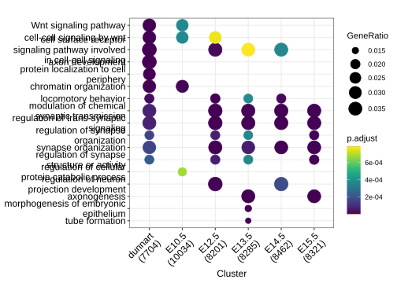
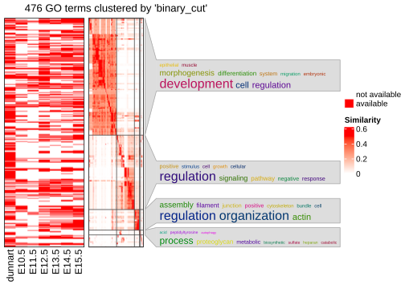
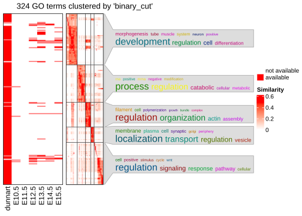

Last updated: 2022-04-11
Checks: 7 0
Knit directory: chipseq-cross-species/
This reproducible R Markdown analysis was created with workflowr (version 1.7.0). The Checks tab describes the reproducibility checks that were applied when the results were created. The Past versions tab lists the development history.
Great! Since the R Markdown file has been committed to the Git repository, you know the exact version of the code that produced these results.
Great job! The global environment was empty. Objects defined in the global environment can affect the analysis in your R Markdown file in unknown ways. For reproduciblity it’s best to always run the code in an empty environment.
The command set.seed(20220209) was run prior to running the code in the R Markdown file. Setting a seed ensures that any results that rely on randomness, e.g. subsampling or permutations, are reproducible.
Great job! Recording the operating system, R version, and package versions is critical for reproducibility.
Nice! There were no cached chunks for this analysis, so you can be confident that you successfully produced the results during this run.
Great job! Using relative paths to the files within your workflowr project makes it easier to run your code on other machines.
Great! You are using Git for version control. Tracking code development and connecting the code version to the results is critical for reproducibility.
The results in this page were generated with repository version 1b05cda. See the Past versions tab to see a history of the changes made to the R Markdown and HTML files.
Note that you need to be careful to ensure that all relevant files for the analysis have been committed to Git prior to generating the results (you can use wflow_publish or wflow_git_commit). workflowr only checks the R Markdown file, but you know if there are other scripts or data files that it depends on. Below is the status of the Git repository when the results were generated:
Ignored files:
Ignored: .RData
Ignored: .Rhistory
Ignored: analysis/.RData
Ignored: analysis/.Rhistory
Ignored: analysis/figure/
Ignored: data/genomic_data/
Ignored: data/geo_submission/
Ignored: output/annotations/
Ignored: output/bam_files/
Ignored: output/filtered_peaks/
Ignored: output/logs/
Ignored: output/peaks/
Ignored: output/plots/
Ignored: output/qc/A-1_input.SeqDepthNorm.bw
Ignored: output/qc/A-1_input.SeqDepthNorm_dunnart_downSampled.bw
Ignored: output/qc/A-1_input.ccurve.txt
Ignored: output/qc/A-1_input.extrap.txt
Ignored: output/qc/A-1_input_R1_trimmed.fastq.gz
Ignored: output/qc/A-1_input_est_lib_complex_metrics.txt
Ignored: output/qc/A-2_H3K4me3.SeqDepthNorm.bw
Ignored: output/qc/A-2_H3K4me3.SeqDepthNorm_dunnart_downSampled.bw
Ignored: output/qc/A-2_H3K4me3.ccurve.txt
Ignored: output/qc/A-2_H3K4me3.extrap.txt
Ignored: output/qc/A-2_H3K4me3_R1_trimmed.fastq.gz
Ignored: output/qc/A-2_H3K4me3_est_lib_complex_metrics.txt
Ignored: output/qc/A-2_H3K4me3_vs_A-1_input.frip_default.txt
Ignored: output/qc/A-2_H3K4me3_vs_A-1_input.frip_default_dunnart_downSampled.txt
Ignored: output/qc/A-2_H3K4me3_vs_A-1_input.frip_p0.01_dunnart_downSampled.txt
Ignored: output/qc/A-3_H3K27ac.SeqDepthNorm.bw
Ignored: output/qc/A-3_H3K27ac.SeqDepthNorm_dunnart_downSampled.bw
Ignored: output/qc/A-3_H3K27ac.ccurve.txt
Ignored: output/qc/A-3_H3K27ac.extrap.txt
Ignored: output/qc/A-3_H3K27ac_R1_trimmed.fastq.gz
Ignored: output/qc/A-3_H3K27ac_est_lib_complex_metrics.txt
Ignored: output/qc/A-3_H3K27ac_vs_A-1_input.frip_default.txt
Ignored: output/qc/A-3_H3K27ac_vs_A-1_input.frip_default_dunnart_downSampled.txt
Ignored: output/qc/A-3_H3K27ac_vs_A-1_input.frip_p0.01_dunnart_downSampled.txt
Ignored: output/qc/B-1_input.SeqDepthNorm.bw
Ignored: output/qc/B-1_input.SeqDepthNorm_dunnart_downSampled.bw
Ignored: output/qc/B-1_input.ccurve.txt
Ignored: output/qc/B-1_input.extrap.txt
Ignored: output/qc/B-1_input_R1_trimmed.fastq.gz
Ignored: output/qc/B-1_input_est_lib_complex_metrics.txt
Ignored: output/qc/B-2_H3K4me3.SeqDepthNorm.bw
Ignored: output/qc/B-2_H3K4me3.SeqDepthNorm_dunnart_downSampled.bw
Ignored: output/qc/B-2_H3K4me3.ccurve.txt
Ignored: output/qc/B-2_H3K4me3.extrap.txt
Ignored: output/qc/B-2_H3K4me3_R1_trimmed.fastq.gz
Ignored: output/qc/B-2_H3K4me3_est_lib_complex_metrics.txt
Ignored: output/qc/B-2_H3K4me3_vs_B-1_input.frip_default.txt
Ignored: output/qc/B-2_H3K4me3_vs_B-1_input.frip_default_dunnart_downSampled.txt
Ignored: output/qc/B-2_H3K4me3_vs_B-1_input.frip_p0.01_dunnart_downSampled.txt
Ignored: output/qc/B-3_H3K27ac.SeqDepthNorm.bw
Ignored: output/qc/B-3_H3K27ac.SeqDepthNorm_dunnart_downSampled.bw
Ignored: output/qc/B-3_H3K27ac.ccurve.txt
Ignored: output/qc/B-3_H3K27ac.extrap.txt
Ignored: output/qc/B-3_H3K27ac_R1_trimmed.fastq.gz
Ignored: output/qc/B-3_H3K27ac_est_lib_complex_metrics.txt
Ignored: output/qc/B-3_H3K27ac_vs_B-1_input.frip_default.txt
Ignored: output/qc/B-3_H3K27ac_vs_B-1_input.frip_default_dunnart_downSampled.txt
Ignored: output/qc/B-3_H3K27ac_vs_B-1_input.frip_p0.01_dunnart_downSampled.txt
Ignored: output/qc/ENCFF011NFM_E12.5_H3K27ac.SeqDepthNorm.bw
Ignored: output/qc/ENCFF011NFM_vs_ENCFF058AUT_E12.5_H3K27ac.frip.txt
Ignored: output/qc/ENCFF011NFM_vs_ENCFF058AUT_E12.5_H3K27ac_downSampled.frip.txt
Ignored: output/qc/ENCFF045IPK_E10.5_H3K4me3.SeqDepthNorm_mouse.bw
Ignored: output/qc/ENCFF045IPK_vs_ENCFF825AVI_E10.5_H3K4me3.frip.txt
Ignored: output/qc/ENCFF045IPK_vs_ENCFF825AVI_E10.5_H3K4me3_downSampled.frip.txt
Ignored: output/qc/ENCFF124TAB_E13.5_H3K4me3.SeqDepthNorm_mouse.bw
Ignored: output/qc/ENCFF124TAB_vs_ENCFF248PGK_E13.5_H3K4me3.frip.txt
Ignored: output/qc/ENCFF124TAB_vs_ENCFF248PGK_E13.5_H3K4me3_downSampled.frip.txt
Ignored: output/qc/ENCFF124UYX_E10.5_H3K4me3.SeqDepthNorm_mouse.bw
Ignored: output/qc/ENCFF124UYX_vs_ENCFF157KEH_E10.5_H3K4me3.frip.txt
Ignored: output/qc/ENCFF124UYX_vs_ENCFF157KEH_E10.5_H3K4me3_downSampled.frip.txt
Ignored: output/qc/ENCFF182ZPF_E12.5_H3K4me3.SeqDepthNorm_mouse.bw
Ignored: output/qc/ENCFF182ZPF_vs_ENCFF203JQV_E12.5_H3K4me3.frip.txt
Ignored: output/qc/ENCFF182ZPF_vs_ENCFF203JQV_E12.5_H3K4me3_downSampled.frip.txt
Ignored: output/qc/ENCFF194ORC_E13.5_H3K27ac.SeqDepthNorm.bw
Ignored: output/qc/ENCFF194ORC_vs_ENCFF117QRC_E13.5_H3K27ac.frip.txt
Ignored: output/qc/ENCFF194ORC_vs_ENCFF117QRC_E13.5_H3K27ac_downSampled.frip.txt
Ignored: output/qc/ENCFF213EBC_E10.5_H3K27ac.SeqDepthNorm.bw
Ignored: output/qc/ENCFF213EBC_vs_ENCFF157KEH_E10.5_H3K27ac.frip.txt
Ignored: output/qc/ENCFF213EBC_vs_ENCFF157KEH_E10.5_H3K27ac_downSampled.frip.txt
Ignored: output/qc/ENCFF258KCR_E15.5_H3K4me3.SeqDepthNorm_mouse.bw
Ignored: output/qc/ENCFF258KCR_vs_ENCFF727QTS_E15.5_H3K4me3.frip.txt
Ignored: output/qc/ENCFF258KCR_vs_ENCFF727QTS_E15.5_H3K4me3_downSampled.frip.txt
Ignored: output/qc/ENCFF290ZNF_E13.5_H3K27ac.SeqDepthNorm.bw
Ignored: output/qc/ENCFF290ZNF_vs_ENCFF248PGK_E13.5_H3K27ac.frip.txt
Ignored: output/qc/ENCFF290ZNF_vs_ENCFF248PGK_E13.5_H3K27ac_downSampled.frip.txt
Ignored: output/qc/ENCFF327VAO_E14.5_H3K27ac.SeqDepthNorm.bw
Ignored: output/qc/ENCFF327VAO_vs_ENCFF784ORI_E14.5_H3K27ac.frip.txt
Ignored: output/qc/ENCFF327VAO_vs_ENCFF784ORI_E14.5_H3K27ac_downSampled.frip.txt
Ignored: output/qc/ENCFF394TZN_E12.5_H3K27ac.SeqDepthNorm.bw
Ignored: output/qc/ENCFF394TZN_vs_ENCFF203JQV_E12.5_H3K27ac.frip.txt
Ignored: output/qc/ENCFF394TZN_vs_ENCFF203JQV_E12.5_H3K27ac_downSampled.frip.txt
Ignored: output/qc/ENCFF401BKM_E15.5_H3K4me3.SeqDepthNorm_mouse.bw
Ignored: output/qc/ENCFF401BKM_vs_ENCFF182XFG_E15.5_H3K4me3.frip.txt
Ignored: output/qc/ENCFF401BKM_vs_ENCFF182XFG_E15.5_H3K4me3_downSampled.frip.txt
Ignored: output/qc/ENCFF485UDC_E13.5_H3K4me3.SeqDepthNorm_mouse.bw
Ignored: output/qc/ENCFF485UDC_vs_ENCFF117QRC_E13.5_H3K4me3.frip.txt
Ignored: output/qc/ENCFF485UDC_vs_ENCFF117QRC_E13.5_H3K4me3_downSampled.frip.txt
Ignored: output/qc/ENCFF512SFE_E11.5_H3K27ac.SeqDepthNorm.bw
Ignored: output/qc/ENCFF512SFE_vs_ENCFF184CUE_E11.5_H3K27ac.frip.txt
Ignored: output/qc/ENCFF512SFE_vs_ENCFF184CUE_E11.5_H3K27ac_downSampled.frip.txt
Ignored: output/qc/ENCFF515PKL_E11.5_H3K27ac.SeqDepthNorm.bw
Ignored: output/qc/ENCFF515PKL_vs_ENCFF376FGM_E11.5_H3K27ac.frip.txt
Ignored: output/qc/ENCFF515PKL_vs_ENCFF376FGM_E11.5_H3K27ac_downSampled.frip.txt
Ignored: output/qc/ENCFF548BRR_E10.5_H3K27ac.SeqDepthNorm.bw
Ignored: output/qc/ENCFF548BRR_vs_ENCFF825AVI_E10.5_H3K27ac.frip.txt
Ignored: output/qc/ENCFF548BRR_vs_ENCFF825AVI_E10.5_H3K27ac_downSampled.frip.txt
Ignored: output/qc/ENCFF584JFB_E15.5_H3K27ac.SeqDepthNorm.bw
Ignored: output/qc/ENCFF584JFB_vs_ENCFF727QTS_E15.5_H3K27ac.frip.txt
Ignored: output/qc/ENCFF584JFB_vs_ENCFF727QTS_E15.5_H3K27ac_downSampled.frip.txt
Ignored: output/qc/ENCFF665QBJ_E14.5_H3K4me3.SeqDepthNorm_mouse.bw
Ignored: output/qc/ENCFF665QBJ_vs_ENCFF002HZV_E14.5_H3K4me3.frip.txt
Ignored: output/qc/ENCFF665QBJ_vs_ENCFF002HZV_E14.5_H3K4me3_downSampled.frip.txt
Ignored: output/qc/ENCFF707WKL_E15.5_H3K27ac.SeqDepthNorm.bw
Ignored: output/qc/ENCFF707WKL_vs_ENCFF182XFG_E15.5_H3K27ac.frip.txt
Ignored: output/qc/ENCFF707WKL_vs_ENCFF182XFG_E15.5_H3K27ac_downSampled.frip.txt
Ignored: output/qc/ENCFF717QDV_E11.5_H3K4me3.SeqDepthNorm_mouse.bw
Ignored: output/qc/ENCFF717QDV_vs_ENCFF376FGM_E11.5_H3K4me3.frip.txt
Ignored: output/qc/ENCFF717QDV_vs_ENCFF376FGM_E11.5_H3K4me3_downSampled.frip.txt
Ignored: output/qc/ENCFF724DMU_E14.5_H3K4me3.SeqDepthNorm_mouse.bw
Ignored: output/qc/ENCFF724DMU_vs_ENCFF784ORI_E14.5_H3K4me3.frip.txt
Ignored: output/qc/ENCFF724DMU_vs_ENCFF784ORI_E14.5_H3K4me3_downSampled.frip.txt
Ignored: output/qc/ENCFF760QYZ_E11.5_H3K4me3.SeqDepthNorm_mouse.bw
Ignored: output/qc/ENCFF760QYZ_vs_ENCFF184CUE_E11.5_H3K4me3.frip.txt
Ignored: output/qc/ENCFF760QYZ_vs_ENCFF184CUE_E11.5_H3K4me3_downSampled.frip.txt
Ignored: output/qc/ENCFF902HAR_E14.5_H3K27ac.SeqDepthNorm.bw
Ignored: output/qc/ENCFF902HAR_vs_ENCFF002HZV_E14.5_H3K27ac.frip.txt
Ignored: output/qc/ENCFF902HAR_vs_ENCFF002HZV_E14.5_H3K27ac_downSampled.frip.txt
Ignored: output/qc/ENCFF941QJZ_E12.5_H3K4me3.SeqDepthNorm_mouse.bw
Ignored: output/qc/ENCFF941QJZ_vs_ENCFF058AUT_E12.5_H3K4me3.frip.txt
Ignored: output/qc/ENCFF941QJZ_vs_ENCFF058AUT_E12.5_H3K4me3_downSampled.frip.txt
Ignored: output/qc/H3K27ac_multibamsum.npz
Ignored: output/qc/H3K27ac_multibamsum.tab
Ignored: output/qc/H3K27ac_multibamsum_mouse.npz
Ignored: output/qc/H3K27ac_multibamsum_mouse.txt
Ignored: output/qc/H3K27ac_pearsoncor_multibamsum_matrix_mouse.txt
Ignored: output/qc/H3K4me3_multibamsum_mouse.npz
Ignored: output/qc/H3K4me3_multibamsum_mouse.txt
Ignored: output/qc/H3K4me3_pearsoncor_multibamsum_matrix_mouse.txt
Ignored: output/qc/bamPEFragmentSize_rawcounts.tab
Ignored: output/qc/bamPEFragmentSize_rawcounts_dunnart_downSampled.tab
Ignored: output/qc/multiBAM_fingerprint_metrics.txt
Ignored: output/qc/multiBAM_fingerprint_metrics_dunnart_downSampled.txt
Ignored: output/qc/multiBAM_fingerprint_rawcounts.txt
Ignored: output/qc/multiBAM_fingerprint_rawcounts_dunnart_downSampled.txt
Ignored: output/qc/multibamsum.npz
Ignored: output/qc/multibamsum.tab
Ignored: output/qc/multibamsum_dunnart_downSampled.npz
Ignored: output/qc/multibamsum_dunnart_downSampled.tab
Ignored: output/qc/multibamsum_mouse.npz
Ignored: output/qc/multibamsum_mouse.tab
Ignored: output/qc/pearsoncor_multibamsum_matrix.txt
Ignored: output/qc/pearsoncor_multibamsum_matrix_dunnart_downSampled.txt
Ignored: output/qc/pearsoncor_multibamsum_matrix_mouse.txt
Ignored: output/wga/
Untracked files:
Untracked: .snakemake/
Untracked: Rplots.pdf
Untracked: code/go_semantic_similarity.R
Untracked: data/raw_reads/
Untracked: output/liftover/
Untracked: output/qc/A-1_input.downSampled.flagstat.qc
Untracked: output/qc/A-2_H3K4me3.downSampled.flagstat.qc
Untracked: output/qc/A-3_H3K27ac.downSampled.flagstat.qc
Untracked: output/qc/B-1_input.downSampled.flagstat.qc
Untracked: output/qc/B-2_H3K4me3.downSampled.flagstat.qc
Untracked: output/qc/B-3_H3K27ac.downSampled.flagstat.qc
Untracked: output/qc/E10.5_H3K27ac.pooled.macs2
Untracked: output/qc/E10.5_H3K27ac.pooled.macs2_downSampled
Untracked: output/qc/E10.5_H3K4me3.pooled.macs2
Untracked: output/qc/E10.5_H3K4me3.pooled.macs2_downSampled
Untracked: output/qc/E10.5_H3K4me3.pooled.macs2_downSampled.log
Untracked: output/qc/E11.5_H3K27ac.pooled.macs2
Untracked: output/qc/E11.5_H3K27ac.pooled.macs2_downSampled
Untracked: output/qc/E11.5_H3K4me3.pooled.macs2
Untracked: output/qc/E11.5_H3K4me3.pooled.macs2_downSampled
Untracked: output/qc/E11.5_H3K4me3.pooled.macs2_downSampled.log
Untracked: output/qc/E12.5_H3K27ac.pooled.macs2
Untracked: output/qc/E12.5_H3K27ac.pooled.macs2_downSampled
Untracked: output/qc/E12.5_H3K4me3.pooled.macs2
Untracked: output/qc/E12.5_H3K4me3.pooled.macs2_downSampled
Untracked: output/qc/E12.5_H3K4me3.pooled.macs2_downSampled.log
Untracked: output/qc/E13.5_H3K27ac.pooled.macs2
Untracked: output/qc/E13.5_H3K27ac.pooled.macs2_downSampled
Untracked: output/qc/E13.5_H3K4me3.pooled.macs2
Untracked: output/qc/E13.5_H3K4me3.pooled.macs2_downSampled
Untracked: output/qc/E13.5_H3K4me3.pooled.macs2_downSampled.log
Untracked: output/qc/E14.5_H3K27ac.pooled.macs2
Untracked: output/qc/E14.5_H3K27ac.pooled.macs2_downSampled
Untracked: output/qc/E14.5_H3K4me3.pooled.macs2
Untracked: output/qc/E14.5_H3K4me3.pooled.macs2_downSampled
Untracked: output/qc/E14.5_H3K4me3.pooled.macs2_downSampled.log
Untracked: output/qc/E15.5_H3K27ac.pooled.macs2
Untracked: output/qc/E15.5_H3K27ac.pooled.macs2_downSampled
Untracked: output/qc/E15.5_H3K4me3.pooled.macs2
Untracked: output/qc/E15.5_H3K4me3.pooled.macs2_downSampled
Untracked: output/qc/E15.5_H3K4me3.pooled.macs2_downSampled.log
Untracked: output/qc/ENCFF002HZV_E14.5_H3K27ac.dupmark.qc
Untracked: output/qc/ENCFF002HZV_E14.5_H3K4me3.dupmark.qc
Untracked: output/qc/ENCFF011NFM_E12.5_H3K27ac.dedup.flagstat.qc
Untracked: output/qc/ENCFF011NFM_E12.5_H3K27ac.downSampled.flagstat.qc
Untracked: output/qc/ENCFF011NFM_E12.5_H3K27ac.dupmark.flagstat.qc
Untracked: output/qc/ENCFF011NFM_E12.5_H3K27ac.dupmark.qc
Untracked: output/qc/ENCFF011NFM_E12.5_H3K27ac.pbc.qc
Untracked: output/qc/ENCFF011NFM_E12.5_H3K27ac.q30.flagstat.qc
Untracked: output/qc/ENCFF011NFM_E12.5_H3K27ac.unfiltered.flagstat.qc
Untracked: output/qc/ENCFF011NFM_E12.5_H3K27ac_filt_15Mreads.SE.cc.plot.pdf
Untracked: output/qc/ENCFF011NFM_E12.5_H3K27ac_filt_15Mreads.SE.cc.qc
Untracked: output/qc/ENCFF045IPK_E10.5_H3K4me3.dedup.flagstat.qc
Untracked: output/qc/ENCFF045IPK_E10.5_H3K4me3.downSampled.flagstat.qc
Untracked: output/qc/ENCFF045IPK_E10.5_H3K4me3.dupmark.flagstat.qc
Untracked: output/qc/ENCFF045IPK_E10.5_H3K4me3.dupmark.qc
Untracked: output/qc/ENCFF045IPK_E10.5_H3K4me3.pbc.qc
Untracked: output/qc/ENCFF045IPK_E10.5_H3K4me3.q30.flagstat.qc
Untracked: output/qc/ENCFF045IPK_E10.5_H3K4me3.unfiltered.flagstat.qc
Untracked: output/qc/ENCFF045IPK_E10.5_H3K4me3_filt_15Mreads.SE.cc.plot.pdf
Untracked: output/qc/ENCFF045IPK_E10.5_H3K4me3_filt_15Mreads.SE.cc.qc
Untracked: output/qc/ENCFF058AUT_E12.5_H3K27ac.dupmark.qc
Untracked: output/qc/ENCFF058AUT_E12.5_H3K4me3.dupmark.qc
Untracked: output/qc/ENCFF117QRC_E13.5_H3K27ac.dupmark.qc
Untracked: output/qc/ENCFF117QRC_E13.5_H3K4me3.dupmark.qc
Untracked: output/qc/ENCFF124TAB_E13.5_H3K4me3.dedup.flagstat.qc
Untracked: output/qc/ENCFF124TAB_E13.5_H3K4me3.downSampled.flagstat.qc
Untracked: output/qc/ENCFF124TAB_E13.5_H3K4me3.dupmark.flagstat.qc
Untracked: output/qc/ENCFF124TAB_E13.5_H3K4me3.dupmark.qc
Untracked: output/qc/ENCFF124TAB_E13.5_H3K4me3.pbc.qc
Untracked: output/qc/ENCFF124TAB_E13.5_H3K4me3.q30.flagstat.qc
Untracked: output/qc/ENCFF124TAB_E13.5_H3K4me3.unfiltered.flagstat.qc
Untracked: output/qc/ENCFF124TAB_E13.5_H3K4me3_filt_15Mreads.SE.cc.plot.pdf
Untracked: output/qc/ENCFF124TAB_E13.5_H3K4me3_filt_15Mreads.SE.cc.qc
Untracked: output/qc/ENCFF124UYX_E10.5_H3K4me3.dedup.flagstat.qc
Untracked: output/qc/ENCFF124UYX_E10.5_H3K4me3.downSampled.flagstat.qc
Untracked: output/qc/ENCFF124UYX_E10.5_H3K4me3.dupmark.flagstat.qc
Untracked: output/qc/ENCFF124UYX_E10.5_H3K4me3.dupmark.qc
Untracked: output/qc/ENCFF124UYX_E10.5_H3K4me3.pbc.qc
Untracked: output/qc/ENCFF124UYX_E10.5_H3K4me3.q30.flagstat.qc
Untracked: output/qc/ENCFF124UYX_E10.5_H3K4me3.unfiltered.flagstat.qc
Untracked: output/qc/ENCFF124UYX_E10.5_H3K4me3_filt_15Mreads.SE.cc.plot.pdf
Untracked: output/qc/ENCFF124UYX_E10.5_H3K4me3_filt_15Mreads.SE.cc.qc
Untracked: output/qc/ENCFF157KEH_E10.5_H3K27ac.dupmark.qc
Untracked: output/qc/ENCFF157KEH_E10.5_H3K4me3.dupmark.qc
Untracked: output/qc/ENCFF182XFG_E15.5_H3K27ac.dupmark.qc
Untracked: output/qc/ENCFF182XFG_E15.5_H3K4me3.dupmark.qc
Untracked: output/qc/ENCFF182ZPF_E12.5_H3K4me3.dedup.flagstat.qc
Untracked: output/qc/ENCFF182ZPF_E12.5_H3K4me3.downSampled.flagstat.qc
Untracked: output/qc/ENCFF182ZPF_E12.5_H3K4me3.dupmark.flagstat.qc
Untracked: output/qc/ENCFF182ZPF_E12.5_H3K4me3.dupmark.qc
Untracked: output/qc/ENCFF182ZPF_E12.5_H3K4me3.pbc.qc
Untracked: output/qc/ENCFF182ZPF_E12.5_H3K4me3.q30.flagstat.qc
Untracked: output/qc/ENCFF182ZPF_E12.5_H3K4me3.unfiltered.flagstat.qc
Untracked: output/qc/ENCFF182ZPF_E12.5_H3K4me3_filt_15Mreads.SE.cc.plot.pdf
Untracked: output/qc/ENCFF182ZPF_E12.5_H3K4me3_filt_15Mreads.SE.cc.qc
Untracked: output/qc/ENCFF184CUE_E11.5_H3K27ac.dupmark.qc
Untracked: output/qc/ENCFF184CUE_E11.5_H3K4me3.dupmark.qc
Untracked: output/qc/ENCFF194ORC_E13.5_H3K27ac.dedup.flagstat.qc
Untracked: output/qc/ENCFF194ORC_E13.5_H3K27ac.downSampled.flagstat.qc
Untracked: output/qc/ENCFF194ORC_E13.5_H3K27ac.dupmark.flagstat.qc
Untracked: output/qc/ENCFF194ORC_E13.5_H3K27ac.dupmark.qc
Untracked: output/qc/ENCFF194ORC_E13.5_H3K27ac.pbc.qc
Untracked: output/qc/ENCFF194ORC_E13.5_H3K27ac.q30.flagstat.qc
Untracked: output/qc/ENCFF194ORC_E13.5_H3K27ac.unfiltered.flagstat.qc
Untracked: output/qc/ENCFF194ORC_E13.5_H3K27ac_filt_15Mreads.SE.cc.plot.pdf
Untracked: output/qc/ENCFF194ORC_E13.5_H3K27ac_filt_15Mreads.SE.cc.qc
Untracked: output/qc/ENCFF203JQV_E12.5_H3K27ac.dupmark.qc
Untracked: output/qc/ENCFF203JQV_E12.5_H3K4me3.dupmark.qc
Untracked: output/qc/ENCFF213EBC_E10.5_H3K27ac.dedup.flagstat.qc
Untracked: output/qc/ENCFF213EBC_E10.5_H3K27ac.downSampled.flagstat.qc
Untracked: output/qc/ENCFF213EBC_E10.5_H3K27ac.dupmark.flagstat.qc
Untracked: output/qc/ENCFF213EBC_E10.5_H3K27ac.dupmark.qc
Untracked: output/qc/ENCFF213EBC_E10.5_H3K27ac.pbc.qc
Untracked: output/qc/ENCFF213EBC_E10.5_H3K27ac.q30.flagstat.qc
Untracked: output/qc/ENCFF213EBC_E10.5_H3K27ac.unfiltered.flagstat.qc
Untracked: output/qc/ENCFF213EBC_E10.5_H3K27ac_filt_15Mreads.SE.cc.plot.pdf
Untracked: output/qc/ENCFF213EBC_E10.5_H3K27ac_filt_15Mreads.SE.cc.qc
Untracked: output/qc/ENCFF248PGK_E13.5_H3K27ac.dupmark.qc
Untracked: output/qc/ENCFF248PGK_E13.5_H3K4me3.dupmark.qc
Untracked: output/qc/ENCFF258KCR_E15.5_H3K4me3.dedup.flagstat.qc
Untracked: output/qc/ENCFF258KCR_E15.5_H3K4me3.downSampled.flagstat.qc
Untracked: output/qc/ENCFF258KCR_E15.5_H3K4me3.dupmark.flagstat.qc
Untracked: output/qc/ENCFF258KCR_E15.5_H3K4me3.dupmark.qc
Untracked: output/qc/ENCFF258KCR_E15.5_H3K4me3.pbc.qc
Untracked: output/qc/ENCFF258KCR_E15.5_H3K4me3.q30.flagstat.qc
Untracked: output/qc/ENCFF258KCR_E15.5_H3K4me3.unfiltered.flagstat.qc
Untracked: output/qc/ENCFF258KCR_E15.5_H3K4me3_filt_15Mreads.SE.cc.plot.pdf
Untracked: output/qc/ENCFF258KCR_E15.5_H3K4me3_filt_15Mreads.SE.cc.qc
Untracked: output/qc/ENCFF290ZNF_E13.5_H3K27ac.dedup.flagstat.qc
Untracked: output/qc/ENCFF290ZNF_E13.5_H3K27ac.downSampled.flagstat.qc
Untracked: output/qc/ENCFF290ZNF_E13.5_H3K27ac.dupmark.flagstat.qc
Untracked: output/qc/ENCFF290ZNF_E13.5_H3K27ac.dupmark.qc
Untracked: output/qc/ENCFF290ZNF_E13.5_H3K27ac.pbc.qc
Untracked: output/qc/ENCFF290ZNF_E13.5_H3K27ac.q30.flagstat.qc
Untracked: output/qc/ENCFF290ZNF_E13.5_H3K27ac.unfiltered.flagstat.qc
Untracked: output/qc/ENCFF290ZNF_E13.5_H3K27ac_filt_15Mreads.SE.cc.plot.pdf
Untracked: output/qc/ENCFF290ZNF_E13.5_H3K27ac_filt_15Mreads.SE.cc.qc
Untracked: output/qc/ENCFF327VAO_E14.5_H3K27ac.dedup.flagstat.qc
Untracked: output/qc/ENCFF327VAO_E14.5_H3K27ac.downSampled.flagstat.qc
Untracked: output/qc/ENCFF327VAO_E14.5_H3K27ac.dupmark.flagstat.qc
Untracked: output/qc/ENCFF327VAO_E14.5_H3K27ac.dupmark.qc
Untracked: output/qc/ENCFF327VAO_E14.5_H3K27ac.pbc.qc
Untracked: output/qc/ENCFF327VAO_E14.5_H3K27ac.q30.flagstat.qc
Untracked: output/qc/ENCFF327VAO_E14.5_H3K27ac.unfiltered.flagstat.qc
Untracked: output/qc/ENCFF327VAO_E14.5_H3K27ac_filt_15Mreads.SE.cc.plot.pdf
Untracked: output/qc/ENCFF327VAO_E14.5_H3K27ac_filt_15Mreads.SE.cc.qc
Untracked: output/qc/ENCFF376FGM_E11.5_H3K27ac.dupmark.qc
Untracked: output/qc/ENCFF376FGM_E11.5_H3K4me3.dupmark.qc
Untracked: output/qc/ENCFF394TZN_E12.5_H3K27ac.dedup.flagstat.qc
Untracked: output/qc/ENCFF394TZN_E12.5_H3K27ac.downSampled.flagstat.qc
Untracked: output/qc/ENCFF394TZN_E12.5_H3K27ac.dupmark.flagstat.qc
Untracked: output/qc/ENCFF394TZN_E12.5_H3K27ac.dupmark.qc
Untracked: output/qc/ENCFF394TZN_E12.5_H3K27ac.pbc.qc
Untracked: output/qc/ENCFF394TZN_E12.5_H3K27ac.q30.flagstat.qc
Untracked: output/qc/ENCFF394TZN_E12.5_H3K27ac.unfiltered.flagstat.qc
Untracked: output/qc/ENCFF394TZN_E12.5_H3K27ac_filt_15Mreads.SE.cc.plot.pdf
Untracked: output/qc/ENCFF394TZN_E12.5_H3K27ac_filt_15Mreads.SE.cc.qc
Untracked: output/qc/ENCFF401BKM_E15.5_H3K4me3.dedup.flagstat.qc
Untracked: output/qc/ENCFF401BKM_E15.5_H3K4me3.downSampled.flagstat.qc
Untracked: output/qc/ENCFF401BKM_E15.5_H3K4me3.dupmark.flagstat.qc
Untracked: output/qc/ENCFF401BKM_E15.5_H3K4me3.dupmark.qc
Untracked: output/qc/ENCFF401BKM_E15.5_H3K4me3.pbc.qc
Untracked: output/qc/ENCFF401BKM_E15.5_H3K4me3.q30.flagstat.qc
Untracked: output/qc/ENCFF401BKM_E15.5_H3K4me3.unfiltered.flagstat.qc
Untracked: output/qc/ENCFF401BKM_E15.5_H3K4me3_filt_15Mreads.SE.cc.plot.pdf
Untracked: output/qc/ENCFF401BKM_E15.5_H3K4me3_filt_15Mreads.SE.cc.qc
Untracked: output/qc/ENCFF485UDC_E13.5_H3K4me3.dedup.flagstat.qc
Untracked: output/qc/ENCFF485UDC_E13.5_H3K4me3.downSampled.flagstat.qc
Untracked: output/qc/ENCFF485UDC_E13.5_H3K4me3.dupmark.flagstat.qc
Untracked: output/qc/ENCFF485UDC_E13.5_H3K4me3.dupmark.qc
Untracked: output/qc/ENCFF485UDC_E13.5_H3K4me3.pbc.qc
Untracked: output/qc/ENCFF485UDC_E13.5_H3K4me3.q30.flagstat.qc
Untracked: output/qc/ENCFF485UDC_E13.5_H3K4me3.unfiltered.flagstat.qc
Untracked: output/qc/ENCFF485UDC_E13.5_H3K4me3_filt_15Mreads.SE.cc.plot.pdf
Untracked: output/qc/ENCFF485UDC_E13.5_H3K4me3_filt_15Mreads.SE.cc.qc
Untracked: output/qc/ENCFF512SFE_E11.5_H3K27ac.dedup.flagstat.qc
Untracked: output/qc/ENCFF512SFE_E11.5_H3K27ac.downSampled.flagstat.qc
Untracked: output/qc/ENCFF512SFE_E11.5_H3K27ac.dupmark.flagstat.qc
Untracked: output/qc/ENCFF512SFE_E11.5_H3K27ac.dupmark.qc
Untracked: output/qc/ENCFF512SFE_E11.5_H3K27ac.pbc.qc
Untracked: output/qc/ENCFF512SFE_E11.5_H3K27ac.q30.flagstat.qc
Untracked: output/qc/ENCFF512SFE_E11.5_H3K27ac.unfiltered.flagstat.qc
Untracked: output/qc/ENCFF512SFE_E11.5_H3K27ac_filt_15Mreads.SE.cc.plot.pdf
Untracked: output/qc/ENCFF512SFE_E11.5_H3K27ac_filt_15Mreads.SE.cc.qc
Untracked: output/qc/ENCFF515PKL_E11.5_H3K27ac.dedup.flagstat.qc
Untracked: output/qc/ENCFF515PKL_E11.5_H3K27ac.downSampled.flagstat.qc
Untracked: output/qc/ENCFF515PKL_E11.5_H3K27ac.dupmark.flagstat.qc
Untracked: output/qc/ENCFF515PKL_E11.5_H3K27ac.dupmark.qc
Untracked: output/qc/ENCFF515PKL_E11.5_H3K27ac.pbc.qc
Untracked: output/qc/ENCFF515PKL_E11.5_H3K27ac.q30.flagstat.qc
Untracked: output/qc/ENCFF515PKL_E11.5_H3K27ac.unfiltered.flagstat.qc
Untracked: output/qc/ENCFF515PKL_E11.5_H3K27ac_filt_15Mreads.SE.cc.plot.pdf
Untracked: output/qc/ENCFF515PKL_E11.5_H3K27ac_filt_15Mreads.SE.cc.qc
Untracked: output/qc/ENCFF548BRR_E10.5_H3K27ac.dedup.flagstat.qc
Untracked: output/qc/ENCFF548BRR_E10.5_H3K27ac.downSampled.flagstat.qc
Untracked: output/qc/ENCFF548BRR_E10.5_H3K27ac.dupmark.flagstat.qc
Untracked: output/qc/ENCFF548BRR_E10.5_H3K27ac.dupmark.qc
Untracked: output/qc/ENCFF548BRR_E10.5_H3K27ac.pbc.qc
Untracked: output/qc/ENCFF548BRR_E10.5_H3K27ac.q30.flagstat.qc
Untracked: output/qc/ENCFF548BRR_E10.5_H3K27ac.unfiltered.flagstat.qc
Untracked: output/qc/ENCFF548BRR_E10.5_H3K27ac_filt_15Mreads.SE.cc.plot.pdf
Untracked: output/qc/ENCFF548BRR_E10.5_H3K27ac_filt_15Mreads.SE.cc.qc
Untracked: output/qc/ENCFF584JFB_E15.5_H3K27ac.dedup.flagstat.qc
Untracked: output/qc/ENCFF584JFB_E15.5_H3K27ac.downSampled.flagstat.qc
Untracked: output/qc/ENCFF584JFB_E15.5_H3K27ac.dupmark.flagstat.qc
Untracked: output/qc/ENCFF584JFB_E15.5_H3K27ac.dupmark.qc
Untracked: output/qc/ENCFF584JFB_E15.5_H3K27ac.pbc.qc
Untracked: output/qc/ENCFF584JFB_E15.5_H3K27ac.q30.flagstat.qc
Untracked: output/qc/ENCFF584JFB_E15.5_H3K27ac.unfiltered.flagstat.qc
Untracked: output/qc/ENCFF584JFB_E15.5_H3K27ac_filt_15Mreads.SE.cc.plot.pdf
Untracked: output/qc/ENCFF584JFB_E15.5_H3K27ac_filt_15Mreads.SE.cc.qc
Untracked: output/qc/ENCFF665QBJ_E14.5_H3K4me3.dedup.flagstat.qc
Untracked: output/qc/ENCFF665QBJ_E14.5_H3K4me3.downSampled.flagstat.qc
Untracked: output/qc/ENCFF665QBJ_E14.5_H3K4me3.dupmark.flagstat.qc
Untracked: output/qc/ENCFF665QBJ_E14.5_H3K4me3.dupmark.qc
Untracked: output/qc/ENCFF665QBJ_E14.5_H3K4me3.pbc.qc
Untracked: output/qc/ENCFF665QBJ_E14.5_H3K4me3.q30.flagstat.qc
Untracked: output/qc/ENCFF665QBJ_E14.5_H3K4me3.unfiltered.flagstat.qc
Untracked: output/qc/ENCFF665QBJ_E14.5_H3K4me3_filt_15Mreads.SE.cc.plot.pdf
Untracked: output/qc/ENCFF665QBJ_E14.5_H3K4me3_filt_15Mreads.SE.cc.qc
Untracked: output/qc/ENCFF707WKL_E15.5_H3K27ac.dedup.flagstat.qc
Untracked: output/qc/ENCFF707WKL_E15.5_H3K27ac.downSampled.flagstat.qc
Untracked: output/qc/ENCFF707WKL_E15.5_H3K27ac.dupmark.flagstat.qc
Untracked: output/qc/ENCFF707WKL_E15.5_H3K27ac.dupmark.qc
Untracked: output/qc/ENCFF707WKL_E15.5_H3K27ac.pbc.qc
Untracked: output/qc/ENCFF707WKL_E15.5_H3K27ac.q30.flagstat.qc
Untracked: output/qc/ENCFF707WKL_E15.5_H3K27ac.unfiltered.flagstat.qc
Untracked: output/qc/ENCFF707WKL_E15.5_H3K27ac_filt_15Mreads.SE.cc.plot.pdf
Untracked: output/qc/ENCFF707WKL_E15.5_H3K27ac_filt_15Mreads.SE.cc.qc
Untracked: output/qc/ENCFF717QDV_E11.5_H3K4me3.dedup.flagstat.qc
Untracked: output/qc/ENCFF717QDV_E11.5_H3K4me3.downSampled.flagstat.qc
Untracked: output/qc/ENCFF717QDV_E11.5_H3K4me3.dupmark.flagstat.qc
Untracked: output/qc/ENCFF717QDV_E11.5_H3K4me3.dupmark.qc
Untracked: output/qc/ENCFF717QDV_E11.5_H3K4me3.pbc.qc
Untracked: output/qc/ENCFF717QDV_E11.5_H3K4me3.q30.flagstat.qc
Untracked: output/qc/ENCFF717QDV_E11.5_H3K4me3.unfiltered.flagstat.qc
Untracked: output/qc/ENCFF717QDV_E11.5_H3K4me3_filt_15Mreads.SE.cc.plot.pdf
Untracked: output/qc/ENCFF717QDV_E11.5_H3K4me3_filt_15Mreads.SE.cc.qc
Untracked: output/qc/ENCFF724DMU_E14.5_H3K4me3.dedup.flagstat.qc
Untracked: output/qc/ENCFF724DMU_E14.5_H3K4me3.downSampled.flagstat.qc
Untracked: output/qc/ENCFF724DMU_E14.5_H3K4me3.dupmark.flagstat.qc
Untracked: output/qc/ENCFF724DMU_E14.5_H3K4me3.dupmark.qc
Untracked: output/qc/ENCFF724DMU_E14.5_H3K4me3.pbc.qc
Untracked: output/qc/ENCFF724DMU_E14.5_H3K4me3.q30.flagstat.qc
Untracked: output/qc/ENCFF724DMU_E14.5_H3K4me3.unfiltered.flagstat.qc
Untracked: output/qc/ENCFF724DMU_E14.5_H3K4me3_filt_15Mreads.SE.cc.plot.pdf
Untracked: output/qc/ENCFF724DMU_E14.5_H3K4me3_filt_15Mreads.SE.cc.qc
Untracked: output/qc/ENCFF727QTS_E15.5_H3K27ac.dupmark.qc
Untracked: output/qc/ENCFF727QTS_E15.5_H3K4me3.dupmark.qc
Untracked: output/qc/ENCFF760QYZ_E11.5_H3K4me3.dedup.flagstat.qc
Untracked: output/qc/ENCFF760QYZ_E11.5_H3K4me3.downSampled.flagstat.qc
Untracked: output/qc/ENCFF760QYZ_E11.5_H3K4me3.dupmark.flagstat.qc
Untracked: output/qc/ENCFF760QYZ_E11.5_H3K4me3.dupmark.qc
Untracked: output/qc/ENCFF760QYZ_E11.5_H3K4me3.pbc.qc
Untracked: output/qc/ENCFF760QYZ_E11.5_H3K4me3.q30.flagstat.qc
Untracked: output/qc/ENCFF760QYZ_E11.5_H3K4me3.unfiltered.flagstat.qc
Untracked: output/qc/ENCFF760QYZ_E11.5_H3K4me3_filt_15Mreads.SE.cc.plot.pdf
Untracked: output/qc/ENCFF760QYZ_E11.5_H3K4me3_filt_15Mreads.SE.cc.qc
Untracked: output/qc/ENCFF784ORI_E14.5_H3K27ac.dupmark.qc
Untracked: output/qc/ENCFF784ORI_E14.5_H3K4me3.dupmark.qc
Untracked: output/qc/ENCFF825AVI_E10.5_H3K27ac.dupmark.qc
Untracked: output/qc/ENCFF825AVI_E10.5_H3K4me3.dupmark.qc
Untracked: output/qc/ENCFF902HAR_E14.5_H3K27ac.dedup.flagstat.qc
Untracked: output/qc/ENCFF902HAR_E14.5_H3K27ac.downSampled.flagstat.qc
Untracked: output/qc/ENCFF902HAR_E14.5_H3K27ac.dupmark.flagstat.qc
Untracked: output/qc/ENCFF902HAR_E14.5_H3K27ac.dupmark.qc
Untracked: output/qc/ENCFF902HAR_E14.5_H3K27ac.pbc.qc
Untracked: output/qc/ENCFF902HAR_E14.5_H3K27ac.q30.flagstat.qc
Untracked: output/qc/ENCFF902HAR_E14.5_H3K27ac.unfiltered.flagstat.qc
Untracked: output/qc/ENCFF902HAR_E14.5_H3K27ac_filt_15Mreads.SE.cc.plot.pdf
Untracked: output/qc/ENCFF902HAR_E14.5_H3K27ac_filt_15Mreads.SE.cc.qc
Untracked: output/qc/ENCFF941QJZ_E12.5_H3K4me3.dedup.flagstat.qc
Untracked: output/qc/ENCFF941QJZ_E12.5_H3K4me3.downSampled.flagstat.qc
Untracked: output/qc/ENCFF941QJZ_E12.5_H3K4me3.dupmark.flagstat.qc
Untracked: output/qc/ENCFF941QJZ_E12.5_H3K4me3.dupmark.qc
Untracked: output/qc/ENCFF941QJZ_E12.5_H3K4me3.pbc.qc
Untracked: output/qc/ENCFF941QJZ_E12.5_H3K4me3.q30.flagstat.qc
Untracked: output/qc/ENCFF941QJZ_E12.5_H3K4me3.unfiltered.flagstat.qc
Untracked: output/qc/ENCFF941QJZ_E12.5_H3K4me3_filt_15Mreads.SE.cc.plot.pdf
Untracked: output/qc/ENCFF941QJZ_E12.5_H3K4me3_filt_15Mreads.SE.cc.qc
Untracked: output/qc/H3K27ac_E10.5_overlap.frip
Untracked: output/qc/H3K27ac_E10.5_overlap_downSampled.frip
Untracked: output/qc/H3K27ac_E11.5_overlap.frip
Untracked: output/qc/H3K27ac_E12.5_overlap.frip
Untracked: output/qc/H3K27ac_E13.5_overlap.frip
Untracked: output/qc/H3K27ac_E14.5_overlap.frip
Untracked: output/qc/H3K27ac_E15.5_overlap.frip
Untracked: output/qc/H3K27ac_overlap_default.frip
Untracked: output/qc/H3K27ac_overlap_default_dunnart_downSampled.frip
Untracked: output/qc/H3K4me3_E10.5_overlap.frip
Untracked: output/qc/H3K4me3_E10.5_overlap_downSampled.frip
Untracked: output/qc/H3K4me3_E11.5_overlap.frip
Untracked: output/qc/H3K4me3_E11.5_overlap_downSampled.frip
Untracked: output/qc/H3K4me3_E12.5_overlap.frip
Untracked: output/qc/H3K4me3_E12.5_overlap_downSampled.frip
Untracked: output/qc/H3K4me3_E13.5_overlap.frip
Untracked: output/qc/H3K4me3_E13.5_overlap_downSampled.frip
Untracked: output/qc/H3K4me3_E14.5_overlap.frip
Untracked: output/qc/H3K4me3_E14.5_overlap_downSampled.frip
Untracked: output/qc/H3K4me3_E15.5_overlap.frip
Untracked: output/qc/H3K4me3_E15.5_overlap_downSampled.frip
Untracked: output/qc/H3K4me3_overlap_default_dunnart_downSampled.frip
Untracked: output/qc/H3K4me3_overlap_p0.01_dunnart_downSampled.frip
Untracked: output/qc/slurmjob.stderr
Untracked: output/qc/slurmjob.stdout
Untracked: output/qc/ucsc_alignment/
Untracked: output/rnaseq/
Unstaged changes:
Modified: analysis/dunnart_peak_characterisation.Rmd
Modified: analysis/tcseq_expression_analysis.Rmd
Modified: code/basic_wrapper.slurm
Modified: output/qc/A-1_input.PPq30.flagstat.qc
Modified: output/qc/A-1_input.dedup.flagstat.qc
Modified: output/qc/A-1_input.dupmark.flagstat.qc
Modified: output/qc/A-1_input.unfiltered.flagstat.qc
Modified: output/qc/A-3_H3K27ac.PPq30.flagstat.qc
Modified: output/qc/A-3_H3K27ac.dedup.flagstat.qc
Modified: output/qc/A-3_H3K27ac.dupmark.flagstat.qc
Modified: output/qc/A-3_H3K27ac.unfiltered.flagstat.qc
Modified: output/qc/B-1_input.PPq30.flagstat.qc
Modified: output/qc/B-1_input.dedup.flagstat.qc
Modified: output/qc/B-1_input.dupmark.flagstat.qc
Modified: output/qc/B-1_input.unfiltered.flagstat.qc
Modified: output/qc/H3K4me3_overlap_default.frip
Note that any generated files, e.g. HTML, png, CSS, etc., are not included in this status report because it is ok for generated content to have uncommitted changes.
These are the previous versions of the repository in which changes were made to the R Markdown (analysis/gene_level_comparisons.Rmd) and HTML (docs/gene_level_comparisons.html) files. If you’ve configured a remote Git repository (see ?wflow_git_remote), click on the hyperlinks in the table below to view the files as they were in that past version.
| File | Version | Author | Date | Message |
|---|---|---|---|---|
| Rmd | 1b05cda | lecook | 2022-04-11 | wflow_publish(“analysis/gene_level_comparisons.Rmd”) |
| Rmd | a97d3c5 | lecook | 2022-03-01 | first commit |
# Load in libraries
library(data.table)
library(tidyverse)
library(ggridges)
library(ggpubr)
library(reshape2)
library(RColorBrewer)
library(ggplot2)
library(VennDiagram)
library(viridis)
library(hrbrthemes)
library(gghalves)
library(dplyr)
library(UpSetR)
library(GOSemSim)
library(circlize)
library(simplifyEnrichment)
library(clusterProfiler)
library(enrichplot)
library(org.Mm.eg.db)
library(tools)
library(ComplexHeatmap)
library('BiocParallel')
library(stringi)
library(gridtext)
library(tools)
library(devtools)
library(clusterProfiler)
library(ChIPseeker)
plot_dir <- "output/plots/"
fullPeak_dir <- "output/peaks/"
annot_dir <- "output/annotations/"
filterPeaks_dir <- "output/filtered_peaks/"
## Set the fonts up so that each plot is the saved the same way.
font <- theme(axis.text.x = element_text(size = 25),
axis.text.y = element_text(size = 25),
axis.title.x = element_text(size = 25),
axis.title.y = element_text(size = 25),
legend.title = element_text(size = 25), legend.text = element_text(size = 25))files =list.files(annot_dir, pattern= "dunnart_enhancer_annotationConvertedIDs.txt|cluster1_promoter_annotationConvertedIDs.txt|*_cluster1_annotation.txt|*.5_enhancer_annotation.txt", full.names=T)
files = as.list(files)
data = lapply(files, function(x) fread(x, header=TRUE, sep="\t", quote = "", na.strings=c("", "NA")))
df1 = Map(mutate, data[c(1,3,5,7,9,11,13)], cre = "promoter")
df2 = Map(mutate, data[c(2,4,6,8,10,12,14)], cre = "enhancer")
data = append(df1, df2)
df1 = Map(mutate, data[c(1,8)], group = "dunnart")
df2 = Map(mutate, data[c(2,9)], group = "E10.5")
df3 = Map(mutate, data[c(3,10)], group = "E11.5")
df4 = Map(mutate, data[c(4,11)], group = "E12.5")
df5 = Map(mutate, data[c(5,12)], group = "E13.5")
df6 = Map(mutate, data[c(6,13)], group = "E14.5")
df7 = Map(mutate, data[c(7,14)], group = "E15.5")
data <- append(df1, df2)
data <- append(data, df3)
data = append(data, df4)
data = append(data, df5)
data = append(data, df6)
data = append(data, df7)
colnames(data[[1]])[19] <- "geneName"
colnames(data[[2]])[19] <- "geneName"
data = lapply(data, function(x) x=setnames(x, old="geneId", new="mouseensembl", skip_absent=TRUE) %>% as.data.table())
subset = rbindlist(
lapply(
data,
function(x)
x %>% dplyr::select(mouseensembl,
cre,
group)
%>% as.data.table()
%>% unique()
),
)
promoters <- split(
dplyr::select(
filter(subset
,cre == "promoter")
,mouseensembl
,group)
,by = "group"
)
enhancers <- split(
dplyr::select(
filter(subset
,cre == "enhancer")
,mouseensembl
,group)
,by = "group"
)
merged_promoters <- promoters %>%
purrr::reduce(full_join
,by = "mouseensembl"
)
merged_enhancers <- enhancers %>%
purrr::reduce(full_join
,by = "mouseensembl"
)
merged_promoters[is.na(merged_promoters)] <- 0
merged_enhancers[is.na(merged_enhancers)] <- 0
merged_promoters = as.data.frame(
merged_promoters)
merged_enhancers = as.data.frame(
merged_enhancers)
colnames(merged_promoters) = c("geneId",
"dunnart",
"E10.5",
"E11.5",
"E12.5",
"E13.5",
"E14.5",
"E15.5")
colnames(merged_enhancers) = c("geneId",
"dunnart",
"E10.5",
"E11.5",
"E12.5",
"E13.5",
"E14.5",
"E15.5")
x = merged_promoters
create_upset_df <- function(x, y){
geneId = x$geneId
upset.df = data.frame(
lapply(
x[,2:8],
function(x)
as.numeric(x!="0")
)
)
rownames(upset.df) = geneId
write.table(upset.df,
paste0(annot_dir,
y,
sep=''),
sep="\t", quote=F,
row.names=T,
col.names = T)
return(upset.df)
}
promoter_upset = create_upset_df(
x = merged_promoters,
y = "mouse_dunnart_promoters_upsetData.txt"
)
enhancer_upset = create_upset_df(
x = merged_enhancers,
y = "mouse_dunnart_enhancers_upsetData.txt"
)
plot_upset <- function(x){
upset(x,
set_size.angles = 45,
order.by="freq",
text.scale = 2,
sets = c("dunnart",
"E10.5","E11.5",
"E12.5","E13.5",
"E14.5", "E15.5"),
nsets=7,
keep.order = T,
mainbar.y.label = "number of genes")
}
p <- plot_upset(promoter_upset)
pdf(paste0(plot_dir,"mouse_dunnart_promoters_upsetPlot.pdf", sep=''))
print(p)
dev.off()svg
2 p <- plot_upset(enhancer_upset)
pdf(paste0(plot_dir,"mouse_dunnart_enhancers_upsetPlot.pdf", sep=''))
print(p)
dev.off()svg
2 mmGO = godata('org.Mm.eg.db', ont="BP")
backg = fread("output/annotations/mart_export.txt", header = FALSE)
backg = unlist(backg$V1)
files =list.files(annot_dir, pattern= "dunnart_promoter_cluster1_annotationConvertedIDs.txt|*_cluster1_annotation.txt|*.5_enhancer_annotation.txt",
full.names=T)
files <- as.list(files)
data = lapply(files, function(x) fread(x,
header=TRUE, sep="\t",
quote = "", na.strings=c("",
"NA")))
colnames(data[[1]])[19] <- "gene"
colnames(data[[1]])[26] <- "geneId"
go <- lapply(data,
function(x)
enrichGO(gene = unlist(x$geneId),
keyType = "ENSEMBL",
OrgDb = org.Mm.eg.db,
ont = "BP",
universe = backg,
pAdjustMethod = "fdr",
readable = TRUE))
names(go) <- c("dunnart_cluster1",
"E10.5_cluster1", "E10.5_enhancer",
"E11.5_cluster1", "E11.5_enhancer",
"E12.5_cluster1", "E12.5_enhancer",
"E13.5_cluster1", "E13.5_enhancer",
"E14.5_cluster1", "E14.5_enhancer",
"E15.5_cluster1", "E15.5_enhancer")
lapply(names(go), function(x) write.table(go[[x]], file=paste0(annot_dir,x,"_mm10GOenrich"), sep="\t", quote=FALSE, col.names=TRUE, row.names=FALSE))[[1]]
NULL
[[2]]
NULL
[[3]]
NULL
[[4]]
NULL
[[5]]
NULL
[[6]]
NULL
[[7]]
NULL
[[8]]
NULL
[[9]]
NULL
[[10]]
NULL
[[11]]
NULL
[[12]]
NULL
[[13]]
NULLsource("code/go_semantic_similarity.R")
#dunnart versus all mouse stages
dunnartvsmouse <- go_semantic_similarity(fileList = annot_dir,
file_to_compare_to = paste0(annot_dir, "dunnart_cluster1_mm10GOenrich"),
file_pattern = "*.5_cluster1_mm10GOenrich")
e10vs <- go_semantic_similarity(fileList = annot_dir,
file_to_compare_to = paste0(annot_dir, "E10.5_cluster1_mm10GOenrich"),
file_pattern = "*.5_cluster1_mm10GOenrich")
e11vs <- go_semantic_similarity(fileList = annot_dir,
file_to_compare_to = paste0(annot_dir, "E11.5_cluster1_mm10GOenrich"),
file_pattern = "*.5_cluster1_mm10GOenrich")
e12vs <- go_semantic_similarity(fileList = annot_dir,
file_to_compare_to = paste0(annot_dir, "E12.5_cluster1_mm10GOenrich"),
file_pattern = "*.5_cluster1_mm10GOenrich")
e13vs <- go_semantic_similarity(fileList = annot_dir,
file_to_compare_to = paste0(annot_dir, "E13.5_cluster1_mm10GOenrich"),
file_pattern = "*.5_cluster1_mm10GOenrich")
e14vs <- go_semantic_similarity(fileList = annot_dir,
file_to_compare_to = paste0(annot_dir, "E14.5_cluster1_mm10GOenrich"),
file_pattern = "*.5_cluster1_mm10GOenrich")
vector_of_scores <- c(
dunnartvsmouse$'10', dunnartvsmouse$'11', dunnartvsmouse$'12', dunnartvsmouse$'13', dunnartvsmouse$'14',dunnartvsmouse$'15',
e10vs$'11',e10vs$'12',e10vs$'13',e10vs$'14',e10vs$'15',
e11vs$'12',e11vs$'13',e11vs$'14',e11vs$'15',
e12vs$'13',e12vs$'14',e12vs$'15',
e13vs$'14',e13vs$'15',
e14vs$'15'
)
my_matrix <- matrix(0,7,7) ## creates a n x n square 0 matrix
rownames(my_matrix) = c('dunnart','E10','E11','E12','E13','E14','E15')
colnames(my_matrix) = c('dunnart','E10','E11','E12','E13','E14','E15')
my_matrix[ col(my_matrix) < row(my_matrix) ] <- vector_of_scores
my_matrix <- my_matrix + t(my_matrix)
diag(my_matrix) <- 1
my_matrix dunnart E10 E11 E12 E13 E14 E15
dunnart 1.000 0.399 0.203 0.482 0.449 0.416 0.449
E10 0.399 1.000 0.254 0.459 0.410 0.388 0.479
E11 0.203 0.254 1.000 0.348 0.321 0.366 0.367
E12 0.482 0.459 0.348 1.000 0.896 0.832 0.891
E13 0.449 0.410 0.321 0.896 1.000 0.839 0.895
E14 0.416 0.388 0.366 0.832 0.839 1.000 0.782
E15 0.449 0.479 0.367 0.891 0.895 0.782 1.000p <- Heatmap(my_matrix, name = "score", col=c('#a8ddb5','#7bccc4','#4eb3d3','#2b8cbe','#08589e'), heatmap_legend_param = list(
title = "GO similarity score", at = c(0,0.2,0.4,0.6,0.8,1)))
p
pdf(paste(plot_dir,'promoter_GO_semantic_scores.pdf',sep=''),width=10,height = 7)
print(p)
dev.off()svg
2 dunnartvsmouse <- go_semantic_similarity(fileList = annot_dir,
file_to_compare_to = paste0(annot_dir,
"dunnart_enhancer_mm10GOenrich"),
file_pattern = "*.5_enhancer_mm10GOenrich")
e10vs <- go_semantic_similarity(fileList = annot_dir,
file_to_compare_to = paste0(annot_dir, "E10.5_enhancer_mm10GOenrich"),
file_pattern = "*.5_enhancer_mm10GOenrich")
e11vs <- go_semantic_similarity(fileList = annot_dir,
file_to_compare_to = paste0(annot_dir, "E11.5_enhancer_mm10GOenrich"),
file_pattern = "*.5_enhancer_mm10GOenrich")
e12vs <- go_semantic_similarity(fileList = annot_dir,
file_to_compare_to = paste0(annot_dir, "E12.5_enhancer_mm10GOenrich"),
file_pattern = "*.5_enhancer_mm10GOenrich")
e13vs <- go_semantic_similarity(fileList = annot_dir,
file_to_compare_to = paste0(annot_dir, "E13.5_enhancer_mm10GOenrich"),
file_pattern = "*.5_enhancer_mm10GOenrich")
e14vs <- go_semantic_similarity(fileList = annot_dir,
file_to_compare_to = paste0(annot_dir, "E14.5_enhancer_mm10GOenrich"),
file_pattern = "*.5_enhancer_mm10GOenrich")
vector_of_scores <- c(
dunnartvsmouse$'10', dunnartvsmouse$'11', dunnartvsmouse$'12', dunnartvsmouse$'13', dunnartvsmouse$'14',dunnartvsmouse$'15',
e10vs$'11',e10vs$'12',e10vs$'13',e10vs$'14',e10vs$'15',
e11vs$'12',e11vs$'13',e11vs$'14',e11vs$'15',
e12vs$'13',e12vs$'14',e12vs$'15',
e13vs$'14',e13vs$'15',
e14vs$'15'
)
my_matrix <- matrix(0,7,7) ## creates a n x n square 0 matrix
rownames(my_matrix) = c('dunnart','E10','E11','E12','E13','E14','E15')
colnames(my_matrix) = c('dunnart','E10','E11','E12','E13','E14','E15')
my_matrix[ col(my_matrix) < row(my_matrix) ] <- vector_of_scores
my_matrix <- my_matrix + t(my_matrix)
diag(my_matrix) <- 1
my_matrix dunnart E10 E11 E12 E13 E14 E15
dunnart 1.000 0.740 0.652 0.789 0.771 0.784 0.797
E10 0.740 1.000 0.833 0.899 0.902 0.906 0.897
E11 0.652 0.833 1.000 0.814 0.811 0.805 0.792
E12 0.789 0.899 0.814 1.000 0.920 0.930 0.925
E13 0.771 0.902 0.811 0.920 1.000 0.933 0.926
E14 0.784 0.906 0.805 0.930 0.933 1.000 0.943
E15 0.797 0.897 0.792 0.925 0.926 0.943 1.000p <- Heatmap(my_matrix, name = "score", col=c('#a8ddb5','#7bccc4','#4eb3d3','#2b8cbe','#08589e'), heatmap_legend_param = list(
title = "GO similarity score", at = c(0,0.2,0.4,0.6,0.8,1)))
p
pdf(paste(plot_dir,'enhancer_GO_semantic_scores.pdf',sep=''),width=10,height = 7)
print(p)
dev.off()svg
2 files =list.files(annot_dir, pattern= "dunnart_enhancer_annotationConvertedIDs.txt|dunnart_promoter_cluster1_annotationConvertedIDs.txt|*_cluster1_annotation.txt|*.5_enhancer_annotation.txt",
full.names=T)
files <- as.list(files)
data = lapply(files, function(x) fread(x,
header=TRUE, sep="\t",
quote = "", na.strings=c("",
"NA")))
colnames(data[[1]])[19] <- "geneID"
colnames(data[[2]])[19] <- "geneID"
data = lapply(data, function(x) x=setnames(x, old="geneId", new="mouseensembl", skip_absent=TRUE) %>% as.data.table())
promoter = list(data[[2]]$mouseensembl, data[[3]]$mouseensembl,
data[[5]]$mouseensembl,
data[[7]]$mouseensembl,
data[[9]]$mouseensembl,
data[[11]]$mouseensembl,
data[[13]]$mouseensembl)
enhancer = list(data[[1]]$mouseensembl, data[[4]]$mouseensembl,
data[[6]]$mouseensembl,
data[[8]]$mouseensembl,
data[[10]]$mouseensembl,
data[[12]]$mouseensembl,
data[[14]]$mouseensembl)
names(enhancer) = c("dunnart","E10.5","E11.5","E12.5", "E13.5","E14.5", "E15.5")
names(promoter) = c("dunnart","E10.5","E11.5","E12.5", "E13.5","E14.5", "E15.5")
compare_go_cluster <- function(x, dotplot){
df <- lapply(x, function(i) unique(i))
go_cluster = simplify(setReadable(
compareCluster(
geneCluster = df,
fun = enrichGO,
ont="BP",
universe = backg,
keyType="ENSEMBL",
pvalueCutoff = 0.001,
OrgDb = org.Mm.eg.db),
OrgDb = org.Mm.eg.db,
keyType="ENSEMBL"))
ck = pairwise_termsim(go_cluster, method = "Wang", semData=mmGO)
p <- dotplot(ck, showCategory = 5) +
scale_color_viridis() +
theme(axis.text.x = element_text(angle = 45, hjust=1))
## Dotplot
pdf(paste0(plot_dir, dotplot, sep=''), width = 9, height = 9)
print(p)
dev.off()
return(list(p,go_cluster))
}
enhancer_plot = compare_go_cluster(enhancer, "enhancer_simplifyGO_heatmap.pdf")
promoter_plot = compare_go_cluster(promoter, "promoter_simplifyGO_heatmap.pdf")
enhancer_plot[[1]]
promoter_plot[[1]]
files =list.files(annot_dir, pattern= "dunnart_enhancer_mm10GOenrich|*.5_enhancer_mm10GOenrich",
full.names=T)
files <- as.list(files)
enhancers = lapply(files, function(x) fread(x,
header=TRUE, sep="\t",
quote = "", na.strings=c("",
"NA")))
files =list.files(annot_dir, pattern= "dunnart_cluster1_mm10GOenrich|*5_cluster1_mm10GOenrich",
full.names=T)
files <- as.list(files)
promoters = lapply(files, function(x) fread(x,
header=TRUE, sep="\t",
quote = "", na.strings=c("",
"NA")))go_data_filtered = lapply(enhancers, function(x) x$ID[x$p.adjust < 0.001])
names(go_data_filtered) = c( "dunnart","E10.5", "E11.5", "E12.5", "E13.5", "E14.5", "E15.5")
simplifyGOFromMultipleLists(go_data_filtered, db = org.Mm.eg.db, measure = "Wang", method = "binary_cut")476/476 GO IDs left for clustering.
Cluster 476 terms by 'binary_cut'... 18 clusters, used 0.1873841 secs.
go_data_filtered = lapply(promoters, function(x) x$ID[x$p.adjust < 0.001])
names(go_data_filtered) = c( "dunnart","E10.5", "E11.5", "E12.5", "E13.5", "E14.5", "E15.5")
simplifyGOFromMultipleLists(go_data_filtered, db = org.Mm.eg.db, measure = "Wang", method = "binary_cut")324/324 GO IDs left for clustering.
Cluster 324 terms by 'binary_cut'... 5 clusters, used 0.07666135 secs.
sessionInfo()R version 4.1.0 (2021-05-18)
Platform: x86_64-pc-linux-gnu (64-bit)
Running under: Red Hat Enterprise Linux
Matrix products: default
BLAS/LAPACK: /usr/local/easybuild-2019/easybuild/software/compiler/gcc/10.2.0/openblas/0.3.12/lib/libopenblas_haswellp-r0.3.12.so
locale:
[1] LC_CTYPE=en_AU.UTF-8 LC_NUMERIC=C
[3] LC_TIME=en_AU.UTF-8 LC_COLLATE=en_AU.UTF-8
[5] LC_MONETARY=en_AU.UTF-8 LC_MESSAGES=en_AU.UTF-8
[7] LC_PAPER=en_AU.UTF-8 LC_NAME=C
[9] LC_ADDRESS=C LC_TELEPHONE=C
[11] LC_MEASUREMENT=en_AU.UTF-8 LC_IDENTIFICATION=C
attached base packages:
[1] tools stats4 grid stats graphics grDevices utils
[8] datasets methods base
other attached packages:
[1] org.Hs.eg.db_3.14.0 ChIPseeker_1.30.3 devtools_2.4.1
[4] usethis_2.0.1 gridtext_0.1.4 stringi_1.6.2
[7] BiocParallel_1.28.3 ComplexHeatmap_2.10.0 org.Mm.eg.db_3.14.0
[10] AnnotationDbi_1.56.2 IRanges_2.28.0 S4Vectors_0.32.4
[13] Biobase_2.54.0 enrichplot_1.14.2 clusterProfiler_4.2.2
[16] simplifyEnrichment_1.4.0 BiocGenerics_0.40.0 circlize_0.4.12
[19] GOSemSim_2.20.0 UpSetR_1.4.0 gghalves_0.1.1
[22] hrbrthemes_0.8.0 viridis_0.6.2 viridisLite_0.4.0
[25] VennDiagram_1.7.1 futile.logger_1.4.3 RColorBrewer_1.1-2
[28] reshape2_1.4.4 ggpubr_0.4.0 ggridges_0.5.3
[31] forcats_0.5.1 stringr_1.4.0 dplyr_1.0.8
[34] purrr_0.3.4 readr_1.4.0 tidyr_1.1.3
[37] tibble_3.1.2 ggplot2_3.3.3 tidyverse_1.3.1
[40] data.table_1.14.0 workflowr_1.7.0
loaded via a namespace (and not attached):
[1] rappdirs_0.3.3
[2] rtracklayer_1.54.0
[3] bit64_4.0.5
[4] knitr_1.33
[5] DelayedArray_0.20.0
[6] KEGGREST_1.34.0
[7] RCurl_1.98-1.3
[8] doParallel_1.0.16
[9] generics_0.1.0
[10] GenomicFeatures_1.46.5
[11] callr_3.7.0
[12] lambda.r_1.2.4
[13] RSQLite_2.2.7
[14] shadowtext_0.1.1
[15] bit_4.0.4
[16] xml2_1.3.2
[17] lubridate_1.7.10
[18] httpuv_1.6.1
[19] SummarizedExperiment_1.24.0
[20] assertthat_0.2.1
[21] xfun_0.23
[22] hms_1.1.0
[23] jquerylib_0.1.4
[24] evaluate_0.14
[25] promises_1.2.0.1
[26] restfulr_0.0.13
[27] progress_1.2.2
[28] fansi_0.5.0
[29] caTools_1.18.2
[30] dbplyr_2.1.1
[31] readxl_1.3.1
[32] igraph_1.2.6
[33] DBI_1.1.1
[34] ellipsis_0.3.2
[35] backports_1.2.1
[36] MatrixGenerics_1.6.0
[37] biomaRt_2.50.3
[38] RcppParallel_5.1.4
[39] vctrs_0.3.8
[40] remotes_2.4.0
[41] abind_1.4-5
[42] cachem_1.0.5
[43] withr_2.4.2
[44] ggforce_0.3.3
[45] GenomicAlignments_1.30.0
[46] treeio_1.18.1
[47] prettyunits_1.1.1
[48] cluster_2.1.2
[49] DOSE_3.20.1
[50] ape_5.5
[51] lazyeval_0.2.2
[52] crayon_1.4.1
[53] labeling_0.4.2
[54] pkgconfig_2.0.3
[55] slam_0.1-48
[56] tweenr_1.0.2
[57] GenomeInfoDb_1.30.1
[58] nlme_3.1-152
[59] pkgload_1.2.1
[60] rlang_1.0.2
[61] lifecycle_1.0.1
[62] downloader_0.4
[63] filelock_1.0.2
[64] extrafontdb_1.0
[65] BiocFileCache_2.2.1
[66] modelr_0.1.8
[67] cellranger_1.1.0
[68] rprojroot_2.0.2
[69] polyclip_1.10-0
[70] matrixStats_0.61.0
[71] Matrix_1.3-4
[72] aplot_0.1.3
[73] carData_3.0-4
[74] boot_1.3-28
[75] reprex_2.0.0
[76] whisker_0.4
[77] GlobalOptions_0.1.2
[78] processx_3.5.2
[79] png_0.1-7
[80] rjson_0.2.20
[81] bitops_1.0-7
[82] getPass_0.2-2
[83] KernSmooth_2.23-20
[84] Biostrings_2.62.0
[85] blob_1.2.1
[86] shape_1.4.6
[87] qvalue_2.26.0
[88] rstatix_0.7.0
[89] gridGraphics_0.5-1
[90] ggsignif_0.6.1
[91] scales_1.1.1
[92] memoise_2.0.0
[93] magrittr_2.0.1
[94] plyr_1.8.6
[95] gplots_3.1.1
[96] zlibbioc_1.40.0
[97] compiler_4.1.0
[98] scatterpie_0.1.7
[99] BiocIO_1.4.0
[100] plotrix_3.8-1
[101] clue_0.3-59
[102] Rsamtools_2.10.0
[103] cli_2.5.0
[104] XVector_0.34.0
[105] patchwork_1.1.1
[106] ps_1.6.0
[107] formatR_1.11
[108] MASS_7.3-54
[109] tidyselect_1.1.1
[110] highr_0.9
[111] yaml_2.2.1
[112] ggrepel_0.9.1
[113] sass_0.4.0
[114] fastmatch_1.1-0
[115] parallel_4.1.0
[116] rio_0.5.26
[117] rstudioapi_0.13
[118] TxDb.Hsapiens.UCSC.hg19.knownGene_3.2.2
[119] foreach_1.5.1
[120] foreign_0.8-81
[121] git2r_0.28.0
[122] gridExtra_2.3
[123] farver_2.1.0
[124] ggraph_2.0.5
[125] proxyC_0.2.4
[126] digest_0.6.27
[127] Rcpp_1.0.8.3
[128] GenomicRanges_1.46.1
[129] car_3.0-10
[130] broom_0.7.6
[131] later_1.2.0
[132] httr_1.4.2
[133] gdtools_0.2.4
[134] colorspace_2.0-1
[135] XML_3.99-0.6
[136] rvest_1.0.0
[137] fs_1.5.0
[138] splines_4.1.0
[139] yulab.utils_0.0.4
[140] tidytree_0.3.9
[141] graphlayouts_0.7.1
[142] ggplotify_0.1.0
[143] sessioninfo_1.1.1
[144] systemfonts_1.0.4
[145] jsonlite_1.7.2
[146] ggtree_3.2.1
[147] futile.options_1.0.1
[148] tidygraph_1.2.0
[149] NLP_0.2-1
[150] ggfun_0.0.6
[151] testthat_3.0.2
[152] R6_2.5.0
[153] tm_0.7-8
[154] pillar_1.6.1
[155] htmltools_0.5.1.1
[156] glue_1.4.2
[157] fastmap_1.1.0
[158] codetools_0.2-18
[159] fgsea_1.20.0
[160] pkgbuild_1.2.0
[161] utf8_1.2.1
[162] lattice_0.20-44
[163] bslib_0.2.5.1
[164] curl_4.3.1
[165] gtools_3.8.2
[166] magick_2.7.2
[167] zip_2.2.0
[168] GO.db_3.14.0
[169] openxlsx_4.2.3
[170] Rttf2pt1_1.3.8
[171] rmarkdown_2.8
[172] desc_1.3.0
[173] munsell_0.5.0
[174] DO.db_2.9
[175] GetoptLong_1.0.5
[176] GenomeInfoDbData_1.2.7
[177] iterators_1.0.13
[178] haven_2.4.1
[179] gtable_0.3.0
[180] extrafont_0.17